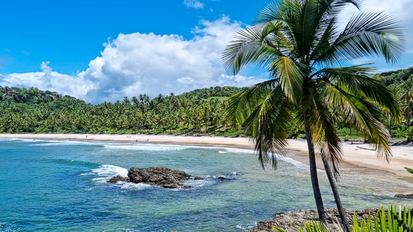
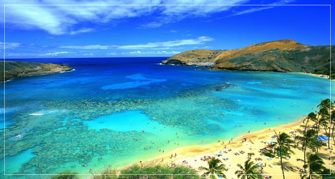
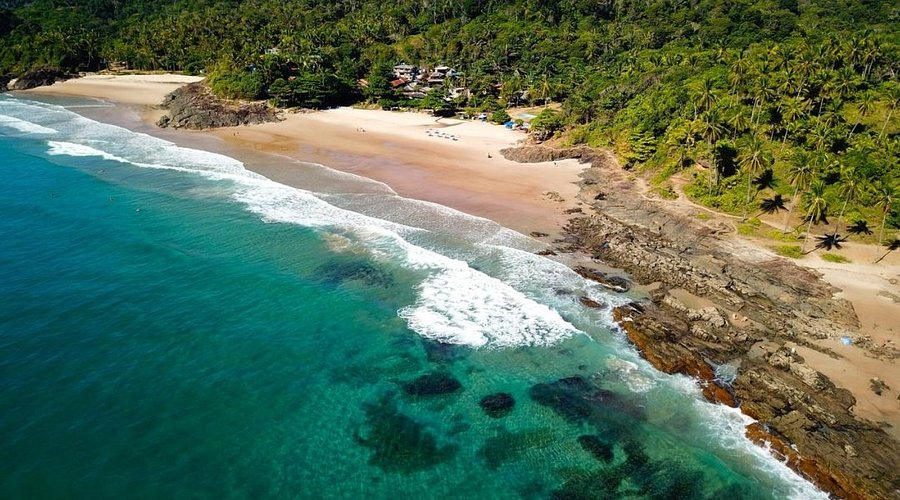
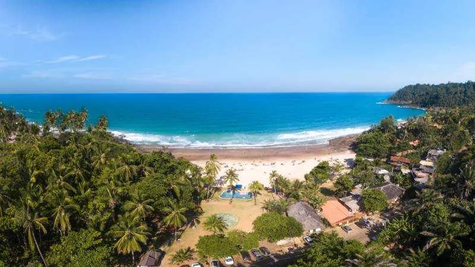
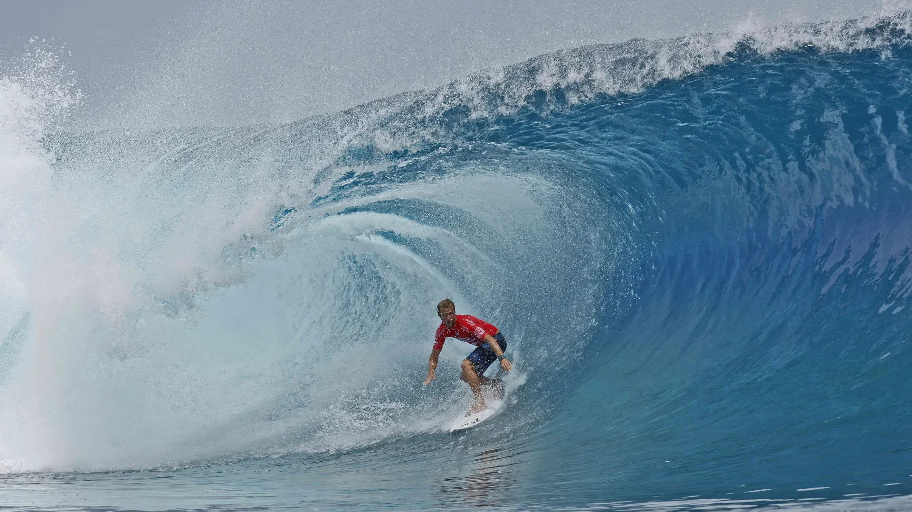
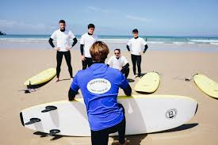
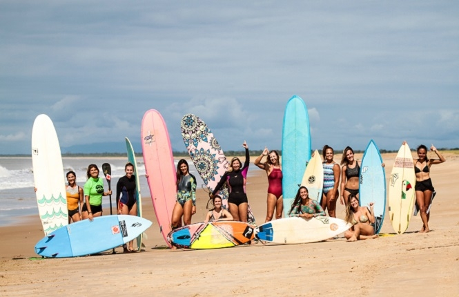
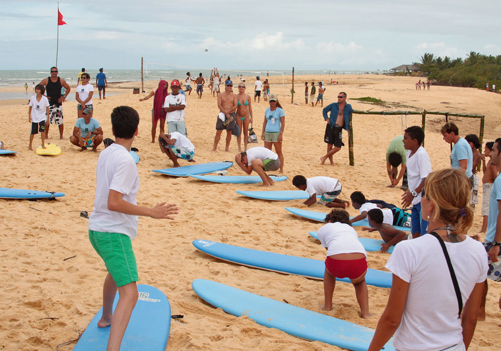

Itacaré é um município litorâneo do sul da Bahia, Brasil, situado na chamada Costa do Cacau, entre o Atlântico e a Mata Atlântica. Reconhecido por suas praias preservadas, rios e cachoeiras, tornou-se um destino destacado de ecoturismo, surf e cultura afro-baiana. Seu clima tropical e atmosfera boêmia atraem visitantes durante todo o ano.



Sobre a Empresa

História do Bruno
Bruno Nascimento é instrutor de surf e empresário local, atuando no setor de turismo e esportes. Morador de uma cidade litorânea, trabalha há anos com aulas de surf e, com o crescimento do turismo na região, decidiu expandir sua atuação. Atualmente, possui um ponto fixo para aluguel de equipamentos de praia, oferecendo serviços voltados tanto para turistas quanto para moradores locais.

Experiência nas Aulas
Bruno trabalha há anos como instrutor de surf, oferecendo aulas individuais e em grupo para iniciantes. Sua experiência na área permite orientar alunos que desejam aprender o esporte de forma prática e acessível, sempre com acompanhamento durante as aulas.

Missão
A proposta do negócio é oferecer aulas de surf e aluguel de equipamentos de praia de maneira prática e acessível. O objetivo também é atender turistas e moradores que procuram lazer, esporte e conforto na praia.

Segurança nas Aulas
As aulas são voltadas principalmente para iniciantes que desejam aprender surf com segurança e orientação profissional. Além das aulas, o negócio busca proporcionar uma experiência organizada e adequada para quem deseja praticar o esporte pela primeira vez.
Vem Surfar com a Gente!
- ✔ Instrutor certificado
- ✔ Aulas para iniciantes
- ✔ Aluguel de equipamentos
- ✔ Atendimento a turistas
📅 Segunda a Domingo
⏰ 08h às 18h
Agende sua aula agora ou nos acompanhe nas redes: